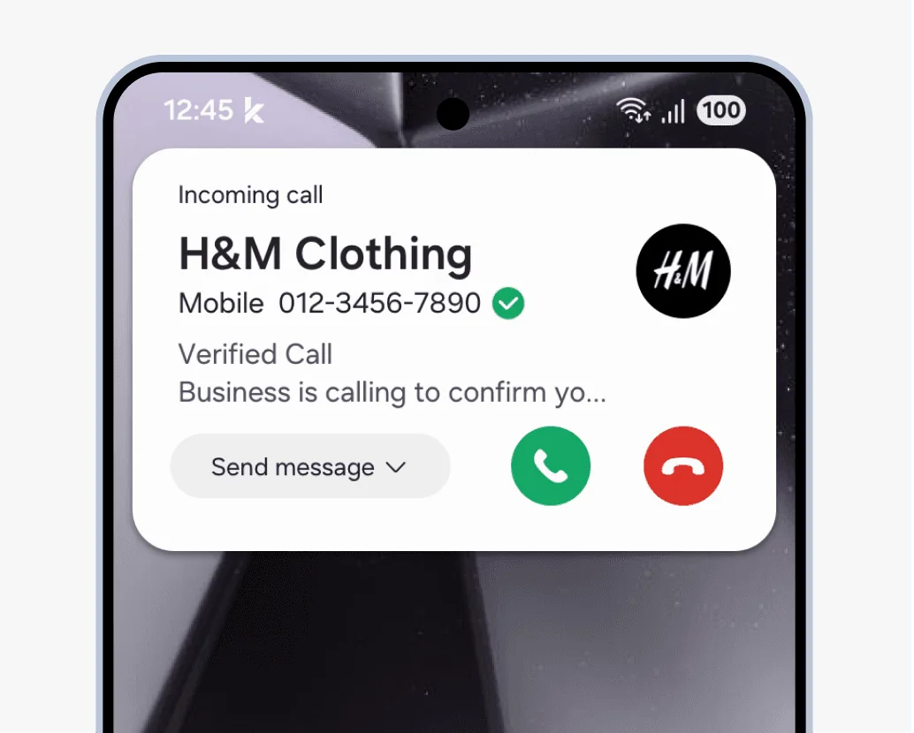
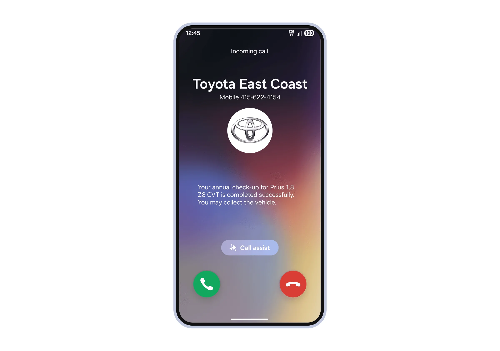

Business Caller ID
Business Caller ID, part of Rich Call Services, is Samsung’s in-house answer to spam calls. Samsung partners directly with network carriers to verify that a call really comes from the business it claims to be, and to show the reason for the call, provided by the business itself.
- Company
- Samsung Design Delhi
- Involved
- Since 2022
- Regions
- USA, Canada & South America
- Status
- Shipped

Where it started
The feature first launched with T-Mobile and AT&T in the USA in 2020. Seeing a verified business name and the reason for a call quickly drew interest, from users and from other carriers.
Bringing it to new carriers
From 2022, I worked on taking the feature to Canada and South America with 8 major network carriers.
Each regional carrier had its own requirements. Some wanted their network name shown alongside the call message; others were fine without their brand.
My role
I worked with stakeholders across carriers and teams, and designed UX touchpoints that met each carrier’s business requirements while staying clear and concise for users. Alongside the incoming call screen, this included the notification.
Impact
8+
network carriers
3
regions: USA, Canada & South America
Commercialised across the USA, Canada and South America.
